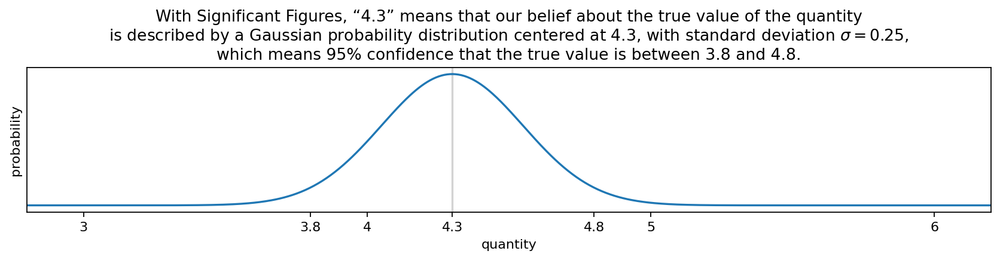

Significant Figures: Gaussian uncertainty, σ=2.5eN
Thursday December 9, 2021
Significant Figures (or Significant Digits) is a tool for an important task: tracking precision. Ironically, the meaning of a number with Significant Figures is often not defined precisely. I propose that if a number's rightmost significant digit is \( D \times 10^N \), this means uncertainty is Gaussian with standard deviation \( \sigma = 2.5 \times 10^N \).

The final digit is “significant but not certain” — which shouldn't mean we know nothing about what the digit is likely to be, and shouldn't mean that there's no chance the neighboring digit could be wrong. A purely digit-based interpretation is unnatural.

A particular instrument (or other source) may generate measurements with a different distribution of uncertainty. In such cases, that information should be captured specifically, and Significant Figures alone is not sufficient. For measurements where there isn't more specific information, a Gaussian distribution is a good choice.
Even when given a precise interpretation, Significant Figures is a system tied to base ten numbers and manual measurement that asks a single number to convey both value and uncertainty. There's only so much one number can mean. Sig Figs is better than not tracking precision at all, but better yet is to be explicit about precision.
I would love to find other sources or interpretations that agree or disagree with this definition. So far I haven't found anything explicit enough to really compare one way or another. References (and feedback of any kind) are especially welcome here!
Visualization code is on GitHub.